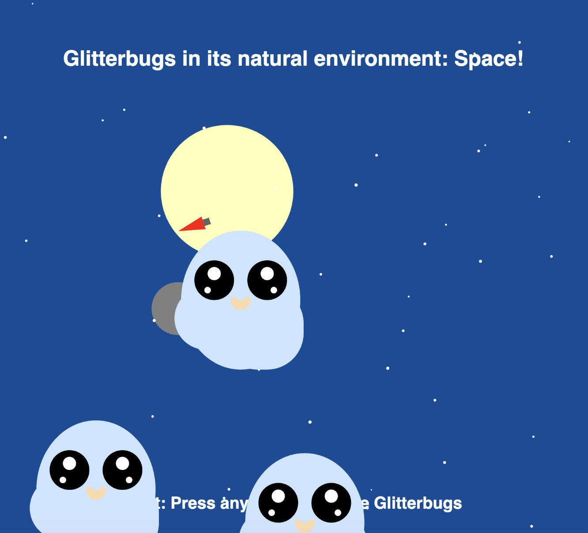

Meet the Gobbling Glitterbugs: These triplets were born among space to devour leftover space debris.
Dive into their world and watch their appetites grow as you provide them with debris.
Let’s help keep space clean, one glitterbug gulp at a time!
= 0; i--) { // loop backwards through food // for loop looping over glitterbugs // and for each checking the distance of foodX[i] and foodY[i] for (let j = 0; j < glitterbugX.length; j++) { if (dist(glitterbugX[j], glitterbugY[j], foodX[i], foodY[i]) <= 70) { foodX.splice(i, 1); foodY.splice(i, 1); count[j]++; } } // food is stamped if (foodX.length != 0 && foodY.length != 0) { fill("pink"); // console.log(foodY); drawFood(foodX[i], foodY[i]); } } // console.log(count); // draw the bugs for (let i = 0; i < glitterbugX.length; i++) { glitterbugMove(i); let colors = [random(160), random(204), random(219)]; drawGlitterbug( glitterbugX[i], glitterbugY[i], colors[0], colors[1], colors[2], count[i], false ); } } } function keyPressed() { sequence++; if (sequence > 2) { background(255); sequence = 0; } } function mousePressed() { if (sequence == 2) { foodX.push(mouseX); foodY.push(mouseY); } } let scaleSize = 0.0001; function drawGlitterbug(xPos, yPos, r, g, b, countfood) { //GLITTERBUG push(); translate(xPos, yPos); if (sequence == 0) { scale(scaleSize); } //GLITTERBUG SHAPE //body fill(r, g, b); noStroke(170, 215, 229); // ellipse(150, 100, 180, 210); ellipse(0, 0, 180, 210); // x: -150 y: -100 //body curves square(-100, -20, 95, 100, 55, 15, 55); square(-30, -20, 125, 100, 55, 55, 55); //black eyes fill(0); circle(-40, -30, 60); circle(40, -30, 60); //white circle inside eyes fill(255); ellipse(-40, -40, 20); ellipse(40, -40, 20); circle(-50, -15, 10); circle(50, -15, 10); //mouth fill("#FADBAC"); arc(0, 0, 30, 30, 0, PI); //circle(40, 0, 10); circle(-10, 0, 10); circle(10, 0, 10); if (sequence == 2) { textSize(22); fill(r, g, b); textAlign(CENTER); text("Food eaten: " + countfood, 0, 140); } pop(); if (scaleSize <= 1) { scaleSize += 0.0005; } } function glitterbugMove(index) { glitterbugX[index] += glitterbugspeedX[index]; glitterbugY[index] += glitterbugspeedY[index]; let xOfLeftEdge = glitterbugX[index] - 100; let xOfRightEdge = glitterbugX[index] - 30 + 125; if (xOfRightEdge >= width || xOfLeftEdge <= 0) { glitterbugspeedX[index] = -glitterbugspeedX[index]; } // let yOfUpperEdge = ; // let yOfLowerEdge = ; if (glitterbugY[index] >= height || glitterbugY[index] <= 0) { glitterbugspeedY[index] = -glitterbugspeedY[index]; } } function drawStars(numStars) { fill(255); noStroke(); for (let i = 0; i < numStars; i++) { let x = random(width); let y = random(height); let size = random(2, 5); ellipse(x, y, size, size); } } function draworganisms(numOrganisms) { fill(0); noStroke(); for (let i = 0; i < numOrganisms; i++) { let x = random(width); let y = random(height); let size = random(-2, 5); ellipse(x, y, size, size); fill(204, 229, 255); } } function drawMoon() { let rotateAngle = radians(angleMoon); push(); fill("grey"); noStroke(); translate(width / 2 - 100, height / 2 - 120); rotate(rotateAngle); ellipse(-150, -120, 80, 80); pop(); angleMoon -= 2; } function drawSun(xPos, yPos) { let sineValue = sin(sinInput); sinInput = sinInput + 0.01; let b = map(sineValue, -1, 1, 0, 204); fill(255, 255, b); noStroke(); circle(width / 2 - 100, height / 2 - 120, 200); } function drawRocket() { let rotateAngle = radians(angleMoon); push(); translate(width / 2, height); rotate(rotateAngle); rocketX = 500; rocketY = 0; fill(255, 0, 0); triangle( rocketX, rocketY - 20, rocketX - 10, rocketY + 20, rocketX + 10, rocketY + 20 ); fill(100); rect(rocketX - 5, rocketY + 20, 10, 10); angle += angleSpeed; pop(); } function drawFood(foodx, foody) { push(); translate(foodx, foody); let vertices = []; for (let i = 0; i < 5; i++) { let angle = (TWO_PI / 5) * i; let x = cos(angle) * random(15, 10); let y = sin(angle) * random(10, 20); vertices.push(createVector(x, y)); } beginShape(); for (let i = 0; i < vertices.length; i++) { vertex(vertices[i].x, vertices[i].y); } endShape(CLOSE); pop(); } function GlitterbugOrigin(originX, originY, circleDia) { noStroke(); push(); translate(originX, originY); let sineValue = sin(sinInput); sinInput = sinInput + 0.01; drawGlitterbug(0, 0, 204, 229, 255, 0); pop(); }Above you see my friend Theodore
And this is Lena
And this is Lena
The glitterbugs are excited and shaking in color! Look to see which glitterbug can eat the most!